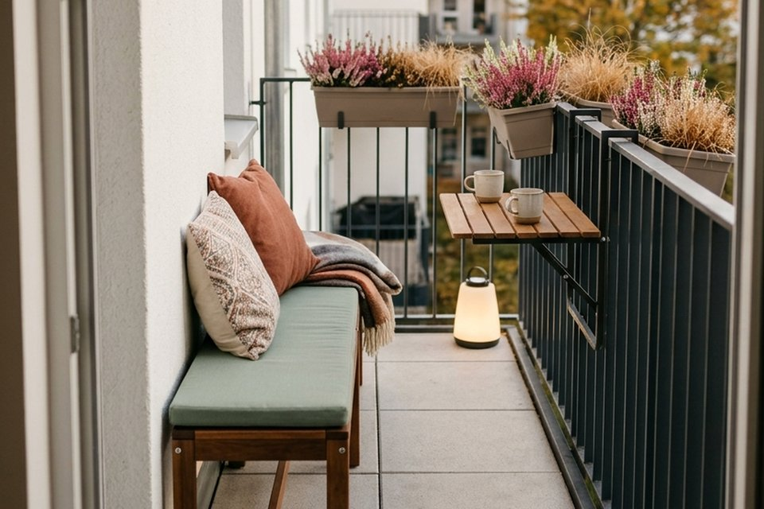

Schmaler Balkon: 7 Ideen für eine Sitzecke unter 1 m Tiefe
Viele Altbau- und Neubaubalkone sind nur 80–100 cm tief. Ein normaler Tisch mit zwei Stühlen passt da nicht – mit schmalen und klappbaren Möbeln aber schon. Die Regel: Mindestens 50 cm Durchgang frei lassen.
Die 7 Ideen
1. Schmale Bank an der Hauswand + Geländertisch
Die Idee aus dem Bild: Eine Bank mit nur 30–35 cm Sitztiefe steht längs an der Wand, gegenüber hängt ein klappbarer Tisch am Geländer. Zusammen brauchen sie etwa 70 cm – und zum Durchgehen klappt man den Tisch einfach runter. Mit langem Sitzkissen und Decke sitzt man bequem zu zweit.
ca. 80–160 €
2. Hängetisch am Geländer mit zwei Hockern
Ein Bartisch, der oben am Geländer eingehängt wird, und zwei schmale Hocker. Man sitzt mit Blick nach draußen – auf hohen Balkonen besonders schön. Vorher das Geländermaß (Breite des Handlaufs) messen.
ca. 50–110 €
3. Klappstühle, die an die Wand passen
Zwei Klappstühle aus Holz oder Metall und ein kleiner Klapptisch mit 40–50 cm Breite. Nach dem Kaffee zusammenklappen und flach an die Wand lehnen – dann ist der Balkon wieder frei.
ca. 60–120 €
4. Eckbank an der Stirnseite
Auf langen, schmalen Balkonen ist die kurze Seite am Ende oft der beste Platz. Eine kleine Eckbank oder eine Bank quer an der Stirnseite nutzt die ganze Breite, und der Rest des Balkons bleibt Durchgang.
ca. 90–200 €
5. Bank mit Stauraum
Eine schmale Auflagenbox, die gleichzeitig Sitzbank ist: Kissen und Decken bleiben trocken, und man braucht keine extra Kiste. Auf die Sitzhöhe achten (ca. 45 cm).
ca. 60–130 €
6. Bodenkissen statt Möbel
Ein Outdoor-Teppich und zwei große Bodenkissen an der Wand – das ist die günstigste Sitzecke und braucht nur 50 cm Tiefe. Mehr dazu im Balkon-Makeover für 100 €.
ca. 40–80 €
7. Pflanzen nach außen, nicht auf den Boden
Auf schmalen Balkonen gehört jeder Zentimeter Boden den Möbeln. Balkonkästen außen am Geländer (wo erlaubt) oder hängende Töpfe an der Wand bringen Grün, ohne Platz zu nehmen.
ca. 30–60 €
Was kostet die Sitzecke?
| Idee | Platzbedarf (Tiefe) | ca. Preis |
|---|---|---|
| Schmale Bank + Geländertisch | ca. 70 cm | 80–160 € |
| Hängetisch + 2 Hocker | ca. 60 cm | 50–110 € |
| Klappstühle + Klapptisch | ca. 80 cm (offen) | 60–120 € |
| Eckbank an der Stirnseite | ganze Breite | 90–200 € |
| Bank mit Stauraum | ca. 40 cm | 60–130 € |
| Teppich + Bodenkissen | ca. 50 cm | 40–80 € |
| Balkonkästen am Geländer | 0 cm | 30–60 € |
Richtwerte für Deutschland, Stand November 2026. Die Preise schwanken je nach Händler und Saison.
Tipp: Vor dem Kauf die Tiefe messen und mit Kreppband auf dem Boden markieren, wo die Möbel stehen sollen. So sieht man sofort, ob noch 50 cm zum Durchgehen bleiben.
Häufige Fragen
Darf ich einen Tisch ans Geländer hängen?
Auf der Innenseite meist ja, weil nichts gebohrt wird. Der Tisch muss fest sitzen und darf nicht nach außen ragen. Im Zweifel in die Hausordnung schauen.
Was mache ich im Winter mit den Möbeln?
Holz- und Metallmöbel können draußen bleiben, wenn sie zugedeckt oder zusammengeklappt sind. Kissen nach drinnen holen. Ideen für die kalte Jahreszeit: Winterbalkon gemütlich machen.